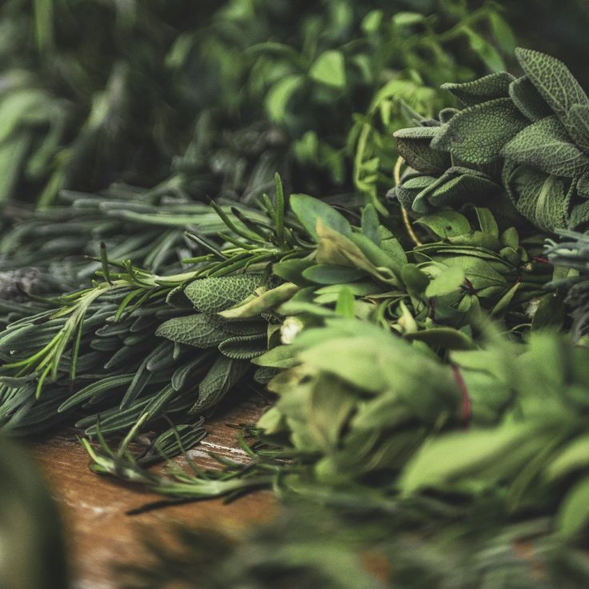

Cinco ervas amazônicas que mudam o campo energético

"A Amazônia é a maior farmácia do mundo. E a maior escola espiritual que conheço."
1. ARRUDA
A guardiã dos quintais brasileiros. Afasta energias negativas, quebra inveja e limpa o campo onde passa.
2. ALFAVACA
Prima do manjericão, mais intensa e selvagem. Limpa energias pesadas e abre caminhos para prosperidade.
3. CIPÓ DE ALHO
Planta de proteção poderosa da Amazônia. Cria barreiras energéticas invisíveis.
4. PAU-ROSA
Árvore ameaçada da Amazônia. Seu óleo cura emocionalmente e eleva a vibração.
5. BREU BRANCO
A resina sagrada da floresta. Sua fumaça branca purifica profundamente e convida energias benevolentes.
"A floresta oferece tudo que precisamos. Mas ela pede uma coisa em troca: que a respeitemos."
Thai TerrearMisticismo Verde — Belém, Pará